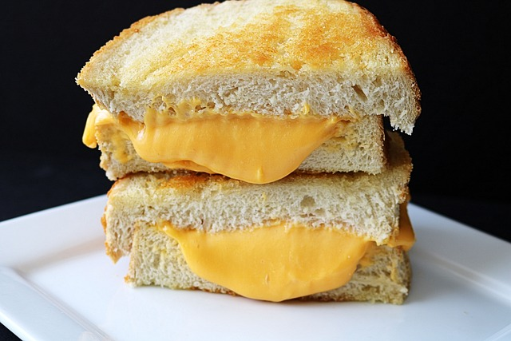

Grilled Cheese Sandwich

Description
The classic grilled cheese is a very popular sandwich eaten as a snack or
as lunch, often with a side of soup.
Ingredients
- white bread
- sliced cheese
- butter
Steps
-
Butter a slice of bread on one side, then place the bread with the
buttered side down on a hot skillet.
-
Top with cheese, then place an another slice of buttered bread on top of
it, with the buttered side up.
- Cook until the bottom slice is slightly browned, then flip it.
- Continue cooking until the cheese is melted.